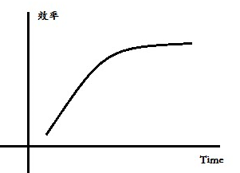

ADC @ 绵阳 --- 前端交流
About Me
-
{ "name" : "瞿(Qu)宝明", "fakeName" : "fs21, freestyle21", "blog" : "http://freestyle21.cn", "description" : "DreamFly Studio, 腾讯, 百度", "devDependencies": { "海贼": "632", "篮球": "9", "健身": "*", "游泳": "0" } }
The Outline
- 前端是什么
- 前端趋势
- 优秀的前端
- 自我素养
前端是什么
前端是什么 ---表象
- qq空间
- 微博
- 人人
- 草榴
前端是什么 ---表象
前端是什么 ---表象
- 成熟的产品
- 豆瓣fm
- 知乎
前端是什么 ---技术
- html
- css
- js
前端是什么 ---技术
- php & python & jsp
- ps & coreldraw & axurer
- 精一门 通十门
前端趋势
前端趋势 ---学习路线
- 
前端趋势 ---方向
- 目前： 重构 - 开发
- 未来： web app 移动前端
- 未来： 传统领域，职业划分细，涉及范围更广。
前端趋势 ---人才
- 互联网快速发展，专业前端人才需求旺盛。
- 得不到公正待遇：工资， 重视度
- 学校没有相关专业， 大多靠自学， 人才匮乏。
前端趋势
- 用户体验 web2.0 挑战和机会
- 网页制作->web前端工程师
-
web前端技术更新迅速
html5 css3 less nodejs coffee backbone
优秀的前端
成为优秀的前端
- 基本功(高数，数据结构，算法，操作系统，编译原理)
- 20-30本书，基本知识。(入门)
- 牛人博客
- stackoverflow
- 优秀框架，思想
自我素养
github
- 代码管理
- 团队合作
- 找工作
blog
- github page
- wordpress
代码风格
- 缩进
- 括号
- 分号
- 代码组织
心态
- 学习
- 平静的心